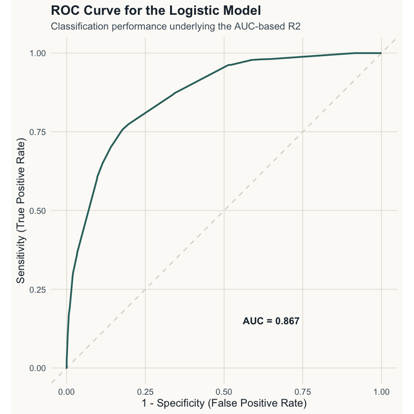
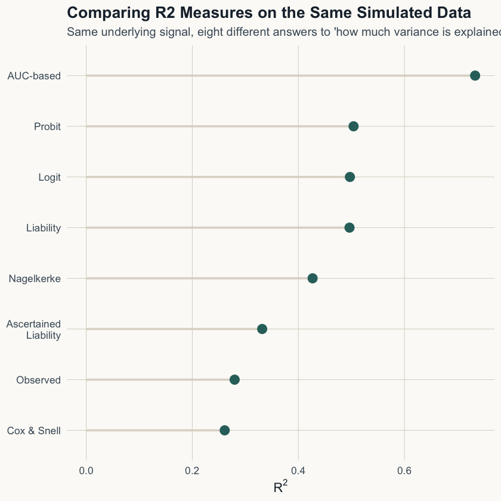

set.seed(123)
n <- 5000
m <- 100
maf <- runif(m, 0.05, 0.5)
G <- sapply(maf, function(p) {
rbinom(n, 2, p)
})
causal_snps <- c(3, 15, 42, 80)
beta <- rep(0, m)
beta[causal_snps] <- c(0.35, -0.25, 0.30, 0.20)
genetic_score <- G %*% beta
K <- 0.10
liability <- as.numeric(scale(genetic_score)) + rnorm(n)
threshold <- qnorm(1 - K)
y <- ifelse(liability > threshold, 1, 0)
df <- data.frame(y = y, G[, causal_snps])Understanding R² in Case-Control Studies
From Observed Scale to Liability with R Code
R2
Liability scale
Heritability
R
Data Science
A worked comparison of eight R² measures used in genetic case-control studies, with simulated data, R code, and visual comparisons.
Recently, I came across a paper comparing different ( R² ) measures used in case-control and genetic studies. Here is the link for the paper. The table summarizing these methods is compact but dense, and I found it useful to sit down and work through each definition carefully.
This article is a structured walkthrough of those ( R² ) measures, along with simple R implementations. The goal is to create a clear reference that can be reused later.
1 Multiple ( R² ) Measures
In standard linear regression, ( R² ) is straightforward: it measures the proportion of variance explained.
In case-control studies, a few things complicate that picture:
- The outcome is binary
- The sample is often ascertained (not representative of the population)
- The underlying trait is often assumed to follow a continuous liability model
As a result, different definitions of ( R² ) exist depending on the model (linear, logit, probit), the scale (observed vs. liability), and the study design.
Simulating a GWAS-like Dataset We will work with a small simulated dataset. The idea is to generate genotype data, construct a genetic signal, and then simulate a binary phenotype using a liability threshold model, simulating a typical GWAS setting.
1.1 Visualizing the Liability Threshold
Before fitting any models, it helps to see the liability threshold model that generated this data: each individual has a simulated liability score, and anyone above the population-prevalence threshold is assigned case status.
library(ggplot2)
theme_site <- function(base_size = 13) {
theme_minimal(base_size = base_size) +
theme(
panel.background = element_rect(fill = "#fbfaf7", color = NA),
plot.background = element_rect(fill = "#fbfaf7", color = NA),
panel.grid.major = element_line(color = "#ddd8cd", linewidth = 0.3),
panel.grid.minor = element_blank(),
plot.title = element_text(color = "#1c2b39", face = "bold", size = base_size + 3),
plot.subtitle = element_text(color = "#4a5a68", size = base_size - 1),
axis.text = element_text(color = "#4a5a68"),
axis.title = element_text(color = "#1c2b39"),
legend.position = "none"
)
}
liab_df <- data.frame(liability = liability)
p1 <- ggplot(liab_df, aes(x = liability)) +
geom_density(fill = "#2f6f6b", alpha = 0.15, color = "#2f6f6b", linewidth = 0.8) +
geom_vline(xintercept = threshold, color = "#b9812c", linewidth = 0.9, linetype = "dashed") +
annotate("text", x = threshold + 0.15, y = 0.35, label = "threshold", color = "#b9812c",
hjust = 0, size = 4, fontface = "bold") +
labs(
title = "Liability Distribution and Disease Threshold",
subtitle = paste0("Population prevalence K = ", K, " | individuals above the threshold become cases"),
x = "Liability", y = "Density"
) +
theme_site()
p1
2 Model Fitting
With the simulated dataset, the next step is to fit models that are commonly used for binary outcomes. We use a linear model for observed-scale R², and logistic and probit models to connect with the likelihood-based and liability-scale interpretations.
These models will form the basis for computing the different R2R²R2 measures discussed next.
lm_fit <- lm(y ~ ., data = df)
logit_fit <- glm(y ~ ., data = df, family = binomial("logit"))
probit_fit <- glm(y ~ ., data = df, family = binomial("probit"))2.1 1. Observed-Scale ( R² )
This is the standard R² from linear regression, applied here to a binary outcome. It measures how much variation in the observed data is explained by the model, but in case-control settings this interpretation is limited.
# Formula: R2 = 1 - (SS_res / SS_tot)
R2_observed <- summary(lm_fit)$r.squaredBecause it is computed directly on the sampled data, this measure depends strongly on the sample prevalence and is not directly comparable across studies.
2.2 2. Cox & Snell’s ( R² )
Cox & Snell’s R² is a likelihood-based measure designed for logistic regression models. Instead of relying on variance, it compares how well the fitted model performs relative to a null model using log-likelihood values.
ll_null <- as.numeric(logLik(glm(y ~ 1, data = df, family = binomial)))
ll_full <- as.numeric(logLik(logit_fit))
R2_cox_snell <- 1 - exp((2/n) * (ll_null - ll_full))This measure captures improvement over the null model, but it has a limitation, it does not reach 1 even for a perfectly fitting model, which affects its interpretability.
2.3 3. Nagelkerke’s ( R² )
Nagelkerke’s R² is a rescaled version of Cox & Snell’s R², designed to improve interpretability. It adjusts the original measure so that the maximum value can reach 1.
R2_nagelkerke <- R2_cox_snell / (1 - exp((2/n) * ll_null))By normalizing the range to [0,1], this version makes it easier to interpret and compare across models, while still retaining the likelihood-based foundation.
2.4 4. Liability-Scale ( R² )
Liability-scale R² transforms the observed R² into a population-level quantity under the liability threshold model. This step accounts for both population prevalence and sample prevalence.
z <- dnorm(qnorm(1 - K))
P_sample <- mean(y)
R2_liability <- R2_observed * (K^2 * (1 - K)^2) /
(z^2 * P_sample * (1 - P_sample))This is the standard form used in statistical genetics, as it reflects variance explained on the underlying liability scale rather than the sampled binary outcome.
2.5 5. Probit Liability ( R² )
The probit-based R² is defined on the liability scale under the assumption that the residual variance is fixed to 1, consistent with the normal distribution used in the probit model.
pred_probit <- predict(probit_fit, type = "link")
R2_probit <- var(pred_probit) / (var(pred_probit) + 1)This provides a direct estimate of variance explained on the latent liability scale under the probit framework.
2.6 6. Logit Liability ( R² )
The logit-based R² follows the same idea as the probit version, but under the logistic model where the residual variance is fixed to:
# pi^2 / 3 approx 3.29
pred_logit <- predict(logit_fit, type = "link")
R2_logit <- var(pred_logit) / (var(pred_logit) + (pi^2/3))This adjusts the variance explained to the logistic scale, reflecting the assumptions of the logit model.
2.7 7. AUC-Based ( R² )
The AUC-based R² takes a different approach by linking classification performance to explained variation. Instead of working directly with variance, it uses the model’s ability to discriminate between cases and controls.
library(pROC)
auc_value <- as.numeric(auc(y, fitted(logit_fit)))
R2_auc <- 2 * (auc_value - 0.5)A picture of the same classification performance underlying the AUC-based measure:
roc_obj <- roc(y, fitted(logit_fit), quiet = TRUE)
roc_df <- data.frame(
sensitivity = roc_obj$sensitivities,
specificity = roc_obj$specificities
)
p2 <- ggplot(roc_df, aes(x = 1 - specificity, y = sensitivity)) +
geom_abline(slope = 1, intercept = 0, color = "#ddd8cd", linewidth = 0.7, linetype = "dashed") +
geom_line(color = "#2f6f6b", linewidth = 1) +
annotate("text", x = 0.65, y = 0.15, label = paste0("AUC = ", round(auc_value, 3)),
color = "#1c2b39", size = 4.2, fontface = "bold") +
labs(
title = "ROC Curve for the Logistic Model",
subtitle = "Classification performance underlying the AUC-based R2",
x = "1 - Specificity (False Positive Rate)", y = "Sensitivity (True Positive Rate)"
) +
coord_equal() +
theme_site()
p2
This provides a simple and practical approximation, especially in settings where only prediction metrics like AUC are available rather than full model outputs.
2.8 8. Ascertainment-Corrected Liability ( R² )
This version adjusts the R² estimate for case-control sampling bias, which arises when the proportion of cases in the sample does not match the true population prevalence.
theta <- (z^2) / (K^2 * (1 - K)^2)
R2_ascertained <- R2_observed /
(R2_observed + theta * P_sample * (1 - P_sample))This correction is essential in practice, as most genetic studies use ascertained samples, and not taking into consideration for this can lead to incorrect estimates.
3 Summary
All these R² measures are trying to answer the same question: ‘how much variation is explained’, but they do so under different assumptions, on different scales, and with different interpretations. In genetic studies, reporting R2R²R2 without clearly stating the scale and definition is not informative, the context in which it is computed is equally important.
Observed-scale R² is straightforward to compute, but it can be misleading in case-control settings because it depends on how the sample is constructed. Liability-scale R², reflects variation at the population level and aligns with the underlying disease model. The probit and logit versions differ in their distributional assumptions, which directly affect how variance is scaled. In real data, especially with case-control designs, accounting for ascertainment is mandatory for meaningful interpretation.
This is the full code snippet
3.1 Visual Summary
r2_summary <- data.frame(
measure = c("Observed", "Cox & Snell", "Nagelkerke", "Liability",
"Probit", "Logit", "AUC-based", "Ascertained\nLiability"),
value = c(R2_observed, R2_cox_snell, R2_nagelkerke, R2_liability,
R2_probit, R2_logit, R2_auc, R2_ascertained)
)
r2_summary$measure <- factor(r2_summary$measure, levels = r2_summary$measure[order(r2_summary$value)])
p3 <- ggplot(r2_summary, aes(x = value, y = measure)) +
geom_segment(aes(x = 0, xend = value, y = measure, yend = measure), color = "#ddd8cd", linewidth = 1) +
geom_point(color = "#2f6f6b", size = 4) +
labs(
title = "Comparing R2 Measures on the Same Simulated Data",
subtitle = "Same underlying signal, eight different answers to 'how much variance is explained?'",
x = expression(R^2), y = NULL
) +
theme_site()
p3
# ============================================================
# R2 measures for simulated GWAS-like case-control data
# Copy-paste ready for an R Jupyter Notebook
# ============================================================
# Install/load package
if (!requireNamespace("pROC", quietly = TRUE)) {
install.packages("pROC")
}
library(pROC)
set.seed(123)
# -----------------------------
# 1. Simulate genotype data
# -----------------------------
n <- 5000
m <- 100
maf <- runif(m, 0.05, 0.5)
G <- sapply(maf, function(p) {
rbinom(n, size = 2, prob = p)
})
colnames(G) <- paste0("rs", 1:m)
# Select causal SNPs
causal_snps <- c(3, 15, 42, 80)
beta <- rep(0, m)
beta[causal_snps] <- c(0.35, -0.25, 0.30, 0.20)
genetic_score <- as.numeric(G %*% beta)
# -----------------------------
# 2. Simulate binary phenotype using liability model
# -----------------------------
K <- 0.10 # population prevalence
liability <- as.numeric(scale(genetic_score)) + rnorm(n)
threshold <- qnorm(1 - K)
y <- ifelse(liability > threshold, 1, 0)
cat("Sample prevalence:", mean(y), "\n")
cat("Population prevalence used:", K, "\n")
# -----------------------------
# 3. Create analysis dataframe
# -----------------------------
df <- data.frame(
y = y,
G[, causal_snps]
)
colnames(df) <- c("y", paste0("rs", causal_snps))
head(df)
# -----------------------------
# 4. Fit models
# -----------------------------
lm_fit <- lm(y ~ ., data = df)
logit_fit <- glm(
y ~ .,
data = df,
family = binomial(link = "logit")
)
probit_fit <- glm(
y ~ .,
data = df,
family = binomial(link = "probit")
)
# -----------------------------
# 5. Observed-scale R2
# -----------------------------
R2_observed <- summary(lm_fit)$r.squared
# -----------------------------
# 6. Cox & Snell R2
# -----------------------------
null_logit <- glm(
y ~ 1,
data = df,
family = binomial(link = "logit")
)
ll_null <- as.numeric(logLik(null_logit))
ll_full <- as.numeric(logLik(logit_fit))
R2_cox_snell <- 1 - exp((2 / n) * (ll_null - ll_full))
# -----------------------------
# 7. Nagelkerke R2
# -----------------------------
R2_nagelkerke <- R2_cox_snell / (1 - exp((2 / n) * ll_null))
# -----------------------------
# 8. Liability-scale R2
# -----------------------------
P_sample <- mean(y)
z <- dnorm(qnorm(1 - K))
R2_liability <- R2_observed *
(K^2 * (1 - K)^2) /
(z^2 * P_sample * (1 - P_sample))
# -----------------------------
# 9. Probit liability-scale R2
# -----------------------------
pred_probit <- predict(probit_fit, type = "link")
R2_probit <- var(pred_probit) / (var(pred_probit) + 1)
# -----------------------------
# 10. Logit liability-scale R2
# -----------------------------
pred_logit <- predict(logit_fit, type = "link")
R2_logit <- var(pred_logit) / (var(pred_logit) + (pi^2 / 3))
# -----------------------------
# 11. AUC-based R2
# -----------------------------
auc_value <- as.numeric(auc(df$y, fitted(logit_fit)))
R2_auc <- 2 * (auc_value - 0.5)
# -----------------------------
# 12. Ascertainment-corrected liability R2
# -----------------------------
theta <- (z^2) / (K^2 * (1 - K)^2)
R2_ascertained <- R2_observed /
(R2_observed + theta * P_sample * (1 - P_sample))
# -----------------------------
# 13. Combine all results
# -----------------------------
R2_results <- data.frame(
Measure = c(
"Observed-scale R2",
"Cox & Snell R2",
"Nagelkerke R2",
"Liability-scale R2",
"Probit liability R2",
"Logit liability R2",
"AUC-based R2",
"Ascertainment-corrected liability R2"
),
Value = c(
R2_observed,
R2_cox_snell,
R2_nagelkerke,
R2_liability,
R2_probit,
R2_logit,
R2_auc,
R2_ascertained
)
)
R2_results
# -----------------------------
# 14. Interpretation helper
# -----------------------------
cat("\nInterpretation:\n")
cat("Observed-scale R2 is computed directly on the binary phenotype.\n")
cat("Cox & Snell and Nagelkerke R2 are likelihood-based logistic-model measures.\n")
cat("Liability-scale R2 converts observed R2 to the latent disease-liability scale.\n")
cat("Probit and logit R2 use model-specific latent-scale residual variances.\n")
cat("AUC-based R2 connects classification performance to explained variation.\n")
cat("Ascertainment-corrected R2 adjusts for case-control sampling.\n")
cat("\nKey point:\n")
cat("For genetic case-control studies, liability-scale R2 is the closest interpretation to heritability on the liability scale.\n")Sample prevalence: 0.181
Population prevalence used: 0.1 | y | rs3 | rs15 | rs42 | rs80 | |
|---|---|---|---|---|---|
| <dbl> | <int> | <int> | <int> | <int> | |
| 1 | 1 | 0 | 0 | 1 | 1 |
| 2 | 0 | 0 | 0 | 2 | 0 |
| 3 | 0 | 0 | 1 | 0 | 1 |
| 4 | 0 | 0 | 2 | 1 | 0 |
| 5 | 0 | 0 | 0 | 0 | 0 |
| 6 | 0 | 1 | 0 | 0 | 0 |
| Measure | Value |
|---|---|
| <chr> | <dbl> |
| Observed-scale R2 | 0.2797826 |
| Cox & Snell R2 | 0.2610302 |
| Nagelkerke R2 | 0.4267736 |
| Liability-scale R2 | 0.4963605 |
| Probit liability R2 | 0.5040026 |
| Logit liability R2 | 0.4971205 |
| AUC-based R2 | 0.7331927 |
| Ascertainment-corrected liability R2 | 0.3317119 |
Interpretation:
Observed-scale R2 is computed directly on the binary phenotype.
Cox & Snell and Nagelkerke R2 are likelihood-based logistic-model measures.
Liability-scale R2 converts observed R2 to the latent disease-liability scale.
Probit and logit R2 use model-specific latent-scale residual variances.
AUC-based R2 connects classification performance to explained variation.
Ascertainment-corrected R2 adjusts for case-control sampling.
Key point:
For genetic case-control studies, liability-scale R2 is the closest interpretation to heritability on the liability scale.4 References
A better coefficient of determination for genetic profile analysis